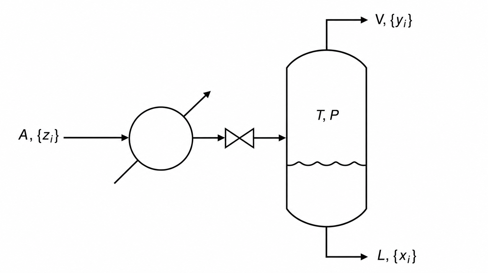
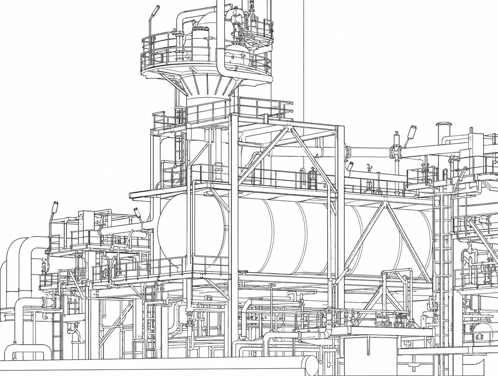
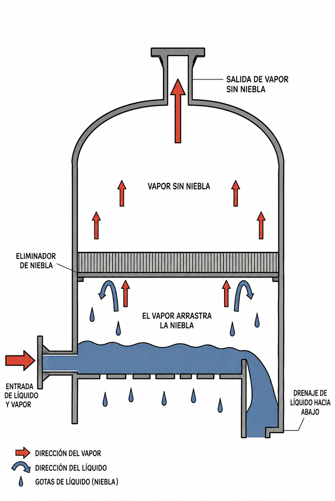

IQYA-2031 · Proyecto de Operaciones Unitarias
Destilación flash: principios y fundamentos
Separación en una sola etapa de equilibrio: vaporización súbita, diagramas de fase y balances.

Contenido de la sesión
- 01Fundamentos del flasheoVaporización súbita y equilibrio de una etapa
- 02Equipo y tambor flashBomba, intercambiador, válvula y separador
- 03Termodinámica y diagramasVolatilidad, K-values, P-x-y y T-x-y
- 04Balances y modeladoMateria, energía y línea de operación
- 05Flash multicomponenteRachford-Rice y algoritmo de solución
- 06Aplicaciones industrialesRefinación, desalinización y más
Objetivo: comprender la destilación flash como el bloque de construcción conceptual de las operaciones de separación, dominando su termodinámica, sus balances y su solución numérica.
Fundamentos del flasheo
Qué es la destilación flash y por qué separa: vaporización parcial súbita y equilibrio de una sola etapa.

Esquema conceptual: la alimentación $A,\{z_i\}$ se presuriza, se estrangula en la válvula y se separa en vapor $V,\{y_i\}$ y líquido $L,\{x_i\}$ en el tambor a $T, P$.
Destilación flash o de equilibrio
Es un proceso continuo de una sola etapa en el que una corriente de alimentación líquida se vaporiza parcialmente de forma súbita al ser introducida en un recipiente a una presión inferior.
El término «flash» alude a la extrema rapidez con la que ocurre esta vaporización.
También llamada destilación instantánea o de equilibrio. Es una de las operaciones unitarias de separación más fundamentales de la ingeniería química.
El principio fundamental de separación
La separación se basa en la diferencia de volatilidades entre los componentes de la mezcla líquida.
Vaporización parcial
La mezcla líquida se somete a una caída de presión súbita, provocando que parte del líquido se vaporice instantáneamente.
Enriquecimiento selectivo
La fase vapor se enriquece en los componentes más volátiles, es decir, los de puntos de ebullición más bajos.
Equilibrio termodinámico
Las corrientes de vapor y líquido abandonan el equipo en estado de equilibrio termodinámico entre sí.
Comprender la destilación flash es esencial: constituye el bloque de construcción conceptual de operaciones más complejas como la destilación fraccionada, que puede entenderse como una serie de etapas de equilibrio interconectadas.
El fenómeno del flasheo, paso a paso
Clave: el calor se entrega antes de la válvula. La válvula y el tambor no aportan calor; la vaporización se «paga» enfriando el propio fluido hasta la temperatura de equilibrio del tambor.

La destilación flash suele operar como etapa de pre-separación aguas arriba de columnas más sofisticadas.
Ubicación en los procesos
- Rol industrial: separaciones «gruesas» o preliminares; unidad de «pre-flash» que reduce la carga de alimentación a columnas más complejas.
- Simplicidad y economía: es el método de destilación conceptual y mecánicamente más simple — solo bomba, intercambiador, válvula y tanque separador, con menor costo de capital.
- Limitación fundamental: una única etapa de equilibrio restringe la separación. No es eficaz para volatilidades similares ni para productos de alta pureza.
El equipo y el tambor flash
Los cuatro componentes del sistema y el corazón del proceso: el separador por gravedad.
Anatomía de un sistema de destilación flash

Diagrama de flujo del sistema completo. Selecciona cada equipo para ver su función.

Corte del tambor: el vapor asciende, el eliminador de niebla retiene las gotas y el líquido drena por el fondo.
El tambor flash
Actúa como separador de fases por gravedad, ofreciendo un espacio de desenganche (disengaging space) para que las gotas arrastradas caigan y el vapor ascienda libremente.
- Tiempo de residencia de 5–10 min para alcanzar el equilibrio termodinámico.
- Velocidad del vapor controlada para evitar el arrastre (entrainment).
- Eliminadores de niebla (demisters) que mejoran la calidad del vapor.
- Geometría vertical u horizontal y control preciso del nivel de líquido.
¿Cómo funciona un evaporador flash?
El evaporador AlfaFlash de Alfa Laval concentra fluidos de alta viscosidad y alta contaminación mediante flasheo por cizallamiento, de manera segura y eficiente.
Observa cómo la caída de presión y el diseño del separador logran la vaporización parcial y la separación de fases sin partes móviles internas.
Alfa Laval · «¿Cómo funciona el evaporador AlfaFlash?» · 03:37
La termodinámica de la separación
Volatilidad, ley de Raoult, K-values y los diagramas de fase que gobiernan el equilibrio.
Volatilidad, ley de Raoult y K-values
La separación es posible porque, en equilibrio, la composición de cada fase es diferente.
Volatilidad relativa
Si $\alpha_{AB} > 1$, el componente $A$ es más volátil que $B$. A mayor valor, más fácil es la separación.
Ley de Raoult (ideal)
La presión parcial de un componente en el vapor es proporcional a su fracción en el líquido y a su presión de vapor pura.
Constante de equilibrio
El K-value relaciona las fracciones molares de cada fase. Para mezclas ideales depende solo de $T$ y $P$.
Diagrama P-x-y a $T$ constante. El flasheo es una caída vertical de presión hasta la región bifásica; la línea de reparto da $x$ e $y$.
Diagrama P-x-y
Representa la presión del sistema frente a la fracción molar del componente más volátil, a $T$ constante:
- Línea de burbuja: presiones a las que un líquido comienza a hervir.
- Línea de rocío: presiones a las que un vapor comienza a condensar.
- La alimentación parte como líquido a alta presión $P_F$; el flasheo la lleva verticalmente hasta $P_{\text{drum}}$, dentro de la región bifásica.
- La línea de reparto horizontal conecta las composiciones de equilibrio $x$ e $y$.
Diagrama T-x-y a $P$ constante. La línea de reparto a $T_{\text{drum}}$ fija $x$, $z$ e $y$; sus segmentos dan la regla de la palanca.
Diagrama T-x-y
Representa la temperatura frente a la fracción molar del componente más volátil, a $P$ constante. La curva inferior es la de burbuja (líquido) y la superior la de rocío (vapor).
La regla de la palanca
Determina gráficamente las cantidades relativas de líquido y vapor:
donde $z$ es la composición global de la alimentación, que siempre queda entre $x$ e $y$.
Cuantificando el proceso
Balances de materia y energía, y su combinación con el equilibrio para hallar la solución del flash.
Balances de materia
Balance total
$F$ = alimentación, $V$ = vapor, $L$ = líquido, todos en caudal molar total.
Balance de especie
Debe cumplirse para cada componente de la mezcla.
Vaporizada y líquida
Del balance global se deduce que $f + q = 1$.
La fracción vaporizada $f$ es la incógnita central del problema flash: fija cuánto vapor se produce y, junto con el equilibrio, determina las composiciones de salida.
La solución del flash está en la intersección entre la línea de operación y la curva de equilibrio $x$-$y$.
La línea de operación flash
Partiendo de $F = V + L$ y $F z = V y + L x$, sustituyendo $L = F - V$ e introduciendo $f = V/F$:
- Pendiente: $\; m = -\dfrac{1-f}{f} = -\dfrac{L}{V}$
- Intersección con el eje $y$: $\; b = \dfrac{z}{f}$
- Punto clave: la recta siempre cruza la diagonal en $(z, z)$.
El lado energético del flash
Balance de entalpía general
- $h_F, h_L$: entalpías molares de las corrientes líquidas
- $H_V$: entalpía molar de la corriente de vapor
- $Q$: tasa neta de calor transferido al sistema
Flash adiabático ($Q = 0$)
El calor se entrega antes de la válvula; válvula y tambor se consideran adiabáticos:
Flash isotérmico
Se fijan $T$ y $P$ del tambor como variables de diseño y se calcula el calor:
El flash multicomponente
Cuando hay más de dos componentes: la ecuación de Rachford-Rice y su solución numérica iterativa.
La ecuación de Rachford-Rice
Para mezclas de más de dos componentes se requiere un enfoque numérico. Partimos del balance por componente escrito con la fracción vaporizada $f$:
Usando $y_i = K_i x_i$ y despejando cada composición:
Imponiendo la condición de consistencia $\displaystyle\sum_i y_i - \sum_i x_i = 0$ se obtiene la ecuación de Rachford-Rice:
Una sola ecuación escalar en la incógnita $f$, monótona decreciente: ideal para métodos numéricos robustos.
Algoritmo del flash isotérmico
Datos de entrada
Se especifican la presión $P$, la temperatura $T$ del tambor y la composición global de la alimentación $\{z_i\}$. Este es un flash isotérmico: $T$ y $P$ son datos, no incógnitas.
Flash isotérmico de una mezcla ternaria
Propano / n-butano / n-pentano. Ajusta $T$ y $P$: los $K_i$ salen de la ley de Raoult (Antoine) y se resuelve Rachford-Rice por bisección.
Condiciones del tambor
| Componente | $z_i$ | $K_i$ | $x_i$ (líquido) | $y_i$ (vapor) |
|---|
$V = f\,F$ y $L = (1-f)\,F$. Cuando $f=0$ toda la alimentación sale líquida; cuando $f=1$, todo es vapor.
Controlando el resultado de la separación
Variables de operación
- Presión del tambor $P_{\text{drum}}$.
- Temperatura del tambor $T_{\text{drum}}$, controlada indirectamente a través del calor suministrado $Q_H$.
- Composición de la alimentación $z_i$.
↑ Temperatura → aumentan los $K_i$ y la fracción vaporizada $f$.
↓ Presión → aumentan los $K_i$ y la fracción vaporizada $f$.
Alimentación más volátil → mayor fracción de vapor.
Tipos de cálculo
| Cálculo | Se especifica | Se calcula |
|---|---|---|
| Punto de burbuja | $P,\ x_i = z_i$ | $T_{\text{bub}},\ y_i$ |
| Punto de rocío | $P,\ y_i = z_i$ | $T_{\text{dew}},\ x_i$ |
| Flash isotérmico | $T,\ P,\ F,\ z_i$ | $f,\ x_i,\ y_i,\ L,\ V,\ Q$ |
| Flash adiabático | $P,\ F,\ z_i,\ h_F,\ Q{=}0$ | $T,\ f,\ x_i,\ y_i,\ L,\ V$ |
La destilación flash en la industria
De la refinación de petróleo a la producción de agua dulce: dónde el flasheo hace el trabajo pesado.
Refinación de petróleo
Es la aplicación más extensa de la destilación flash. Las unidades de crudo calientan y flashean el petróleo para lograr una separación inicial en fracciones antes de las columnas de fraccionamiento.
- Destilación atmosférica y al vacío
- Hidrotratamiento
- Reformado catalítico
- Craqueo catalítico fluido (FCC)
Tambores flash y tren de intercambio en una unidad de crudo.

Destilación flash multietapa (MSF): la salmuera caliente flashea en cámaras a presiones sucesivamente menores.
Desalinización (MSF)
La tecnología de destilación flash multietapa (MSF) es fundamental para producir agua dulce a gran escala.
El agua de mar caliente fluye a través de cámaras a presiones sucesivamente más bajas, vaporizándose parcialmente en cada etapa; ese vapor se condensa para obtener agua pura.
Cada cámara es, en esencia, un tambor flash: al encadenar muchas etapas se recupera calor y se multiplica la producción de destilado.
Aplicaciones adicionales
Tratamiento de gases ácidos
En los procesos con aminas para eliminar $\text{H}_2\text{S}$ y $\text{CO}_2$ del gas natural:
- Un tambor flash se coloca después de la columna de absorción
- La amina «rica» se flashea para liberar hidrocarburos ligeros disueltos
- Ocurre antes de pasar a la columna de regeneración
Industria farmacéutica y alimentaria
Por su simplicidad y bajo costo, es ideal cuando no se requiere alta pureza:
- Purificación de disolventes
- Recuperación de aceites esenciales de material vegetal
- Separación de productos de fermentación
- Purificación de bebidas alcohólicas
Conceptos fundamentales
Separación continua de una sola etapa de equilibrio.
Reducción súbita de presión de una corriente líquida precalentada.
Enriquecimiento selectivo según la volatilidad.
Balances de materia y energía con relaciones de equilibrio.
Proporciona separaciones rápidas y económicas cuando no se requiere alta pureza, y es parte esencial de procesos como la refinación y la desalinización. Su análisis exige dominar balances de materia, energía y equilibrio de fases.
Destilación flash frente a fraccionada
| Característica | Destilación flash | Destilación fraccionada |
|---|---|---|
| Principio | Una única etapa de equilibrio | Múltiples etapas sucesivas |
| Equipo clave | Tambor flash | Columna de platos/empaque, rehervidor y condensador |
| Reflujo | No utiliza reflujo | El reflujo es esencial |
| Capacidad de separación | Limitada ($\alpha \gg 1$) | Alta (incluso $\alpha \approx 1$) |
| Pureza del producto | Baja a moderada | Potencialmente muy alta (>99%) |
| Complejidad y costo | Simple y económica | Compleja y costosa |